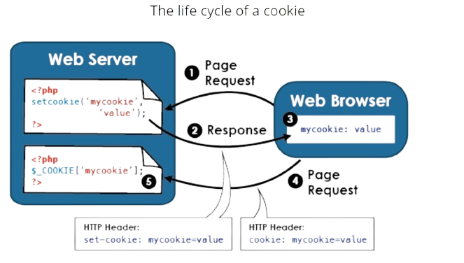
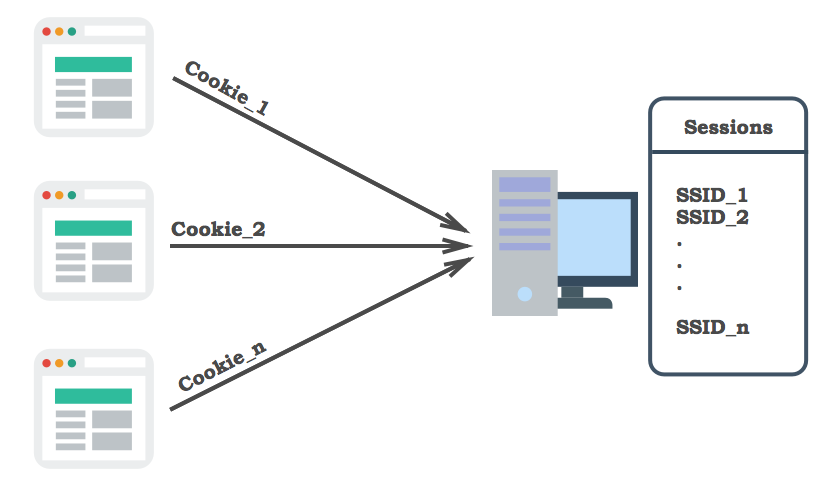

Cookies y Sesiones
Como hemos visto, el protocolo HTTP es "sin estado" (stateless). Esto significa que cada petición que un navegador hace al servidor es un evento completamente independiente; por defecto, el servidor no tiene memoria y no recuerda ninguna de las peticiones anteriores. Si un usuario visita una página y un segundo después visita otra, el servidor no sabe que se trata del mismo usuario.
Para construir aplicaciones interactivas (como un carrito de la compra o un sistema de login), necesitamos una forma de superar esta "amnesia" y mantener datos a través de múltiples peticiones. La técnica más antigua y fundamental para lograr esto son las cookies.
Cookies
Una cookie es un pequeño fichero de texto que un servidor web envía al navegador del cliente. El navegador guarda este fichero en el ordenador del usuario y, a partir de ese momento, lo reenviará al mismo servidor con cada petición subsiguiente. De esta forma, el servidor puede "recordar" información sobre ese usuario específico, como si el navegador llevara una pequeña tarjeta de identificación.
Las cookies son la base para funcionalidades como: * Recordar las preferencias de un usuario (p. ej., el idioma o el tema visual). * Mantener a un usuario identificado con la opción "Recordarme". * Rastrear la actividad del usuario en un sitio (p. ej., los últimos productos visitados).

Creando una Cookie con setcookie()
En PHP, las cookies se crean con la función setcookie(). Esta función debe ser llamada antes de que se envíe cualquier tipo de salida al navegador (antes de cualquier echo, HTML, o incluso espacios en blanco). Esto se debe a que las cookies se envían como parte de las cabeceras HTTP.
La sintaxis básica es:
nombre: El nombre que le daremos a la cookie.valor: La información que queremos almacenar.expiración: Un timestamp de Unix que indica cuándo caducará la cookie. Si se omite o se pone0, la cookie expirará cuando se cierre el navegador.ruta: La ruta del servidor en la que la cookie estará disponible. Poner/hace que esté disponible en todo el dominio.
Veamos un ejemplo de como crear una cookie en nuestro sistema para recordar el idioma preferido durante un mes:
<?php
// Calculamos el timestamp para dentro de 30 días
// time() nos da el timestamp actual
// 86400 son los segundos que tiene un día (60 * 60 * 24)
$expiracion = time() + (86400 * 30);
// Creamos la cookie
setcookie("idioma", "es", $expiracion, "/");
// ¡Importante! No debe haber ningún echo o HTML antes de esta línea.
?>
<!DOCTYPE html>
<html lang="es">
<head>
<title>Página con Cookie</title>
</head>
<body>
<h1>Cookie Creada</h1>
<p>Hemos guardado tu preferencia de idioma (Español).</p>
</body>
</html>
Una vez que una cookie ha sido creada y el usuario visita una nueva página (o recarga la actual), el navegador enviará la cookie de vuelta al servidor. PHP procesará automáticamente todas las cookies recibidas y las pondrá a nuestra disposición en la variable superglobal $_COOKIE:
<?php
// Comprobamos si la cookie 'idioma' existe
if (isset($_COOKIE['idioma'])) {
$idioma_guardado = $_COOKIE['idioma'];
echo "Tu idioma preferido es: " . $idioma_guardado; // Salida: Tu idioma preferido es: es
} else {
echo "No hemos encontrado ninguna preferencia de idioma.";
}
?>
Finalmente, si queremos eliminar nuestra cookie del sistema, simplemente tenemos que volver a enviarla con la función setcookie(), pero con una fecha de expiración en el pasado.
<?php
// Ponemos una fecha de expiración de hace una hora para eliminarla
setcookie("idioma", "", time() - 3600, "/");
?>
Consideraciones Importantes
Aunque las cookies son una herramienta muy útil, es fundamental entender sus limitaciones y las implicaciones de seguridad que conllevan para usarlas de forma correcta y responsable.
-
Límite de Tamaño: Las cookies fueron diseñadas para almacenar pequeñas piezas de información. Tienen un límite de tamaño de aproximadamente 4KB, por lo que no son adecuadas para guardar grandes volúmenes de datos.
-
Visibilidad y Seguridad: Este es el punto más crítico. Las cookies se almacenan como ficheros de texto plano en el ordenador del usuario. Esto significa que un usuario con conocimientos básicos puede encontrarlas, leer su contenido e incluso modificarlo. Por esta razón, nunca, bajo ninguna circunstancia, debes guardar información sensible (como contraseñas, datos personales no cifrados o números de tarjetas de crédito) en una cookie. Hacerlo supondría una grave brecha de seguridad.
Sesiones: La Memoria Segura del Servidor
Si bien las cookies son útiles para recordar datos no sensibles, presentan un gran problema: toda la información se almacena en el ordenador del cliente, lo que las hace inseguras para datos como identificadores de usuario, contenido de un carrito de la compra o cualquier otra información privada.

Las sesiones resuelven este problema de raíz. Una sesión es un mecanismo que permite almacenar información de un usuario de forma persistente a través de múltiples visitas, pero guardando los datos en el lado del servidor.
¿Cómo Funciona una Sesión?
El mecanismo es ingenioso y combina lo mejor de ambos mundos. El proceso es el siguiente:
- Cuando un usuario inicia una sesión en un sitio por primera vez, el servidor genera un identificador de sesión (Session ID) único y aleatorio (p. ej.,
a1b2c3d4e5f6g7h8). - El servidor crea un fichero en su propio disco duro con ese mismo nombre (p. ej.,
sess_a1b2c3d4e5f6g7h8), que actuará como el almacén para los datos de ese usuario. - El servidor envía una cookie al navegador del usuario que contiene únicamente ese identificador de sesión.
- En cada petición subsiguiente, el navegador del usuario envía de vuelta la cookie con el identificador de sesión.
- El servidor utiliza ese ID para localizar el fichero de sesión correspondiente, leer los datos que contiene y ponerlos a disposición del script de PHP.
De esta forma, el navegador del cliente solo almacena una "llave" sin ningún significado por sí misma. Todos los datos importantes se quedan guardados de forma segura en el "almacén" del servidor.
Para trabajar con sesiones, seguiremos un ciclo de vida simple: iniciar, leer/escribir y destruir.
Entendiendo el ciclo de vida
Para poder acceder a los datos de una sesión (ya sea para leer o para escribir), es obligatorio llamar a la función session_start() al principio de cada script que vaya a usar sesiones. Esta llamada debe realizarse antes de que se envíe cualquier tipo de salida al navegador (HTML, echo, etc.).
Una vez iniciada la sesión, PHP nos da acceso a la variable superglobal $_SESSION. Podemos leer y escribir datos en este array como en cualquier otro. Cuando el script termina de ejecutarse, PHP guardará automáticamente el contenido de $_SESSION en el fichero de sesión del servidor.
<?php
// ¡Paso 1 OBLIGATORIO!
session_start();
// Almacenamos datos en la sesión
$_SESSION['id_usuario'] = 123;
$_SESSION['nombre_usuario'] = "Ana";
echo "Se han guardado datos en tu sesión.";
echo '<br><a href="pagina2.php">Ir a la página 2</a>';
?>
Ahora, si queremos leer los datos de nuestra sesión, simplemente debemos acceder a ellos:
<?php
// ¡Paso 1 OBLIGATORIO también aquí!
session_start();
// Leemos los datos que guardamos en la página anterior
if (isset($_SESSION['nombre_usuario'])) {
$nombre = $_SESSION['nombre_usuario'];
echo "¡Hola de nuevo, " . $nombre . "!";
echo '<br><a href="logout.php">Cerrar sesión</a>';
} else {
echo "No hay ninguna sesión iniciada.";
echo '<br><a href="pagina1.php">Iniciar sesión</a>';
}
?>
Si ahora queremos modificar estos datos, es tan simple como reasignar un valor a una clave de $_SESSION. Por otro lado, para eliminar una variable específica de la sesión, se utiliza unset().
// Modificar un dato
$_SESSION['nombre_usuario'] = "Ana García";
// Eliminar un dato específico
unset($_SESSION['id_usuario']);
Cuando un usuario cierra sesión, no es suficiente con borrar las variables. Debemos eliminar sus variables, destruir la sesión por completo y opcionalmente, redirigir al usuario a la página de inicio: